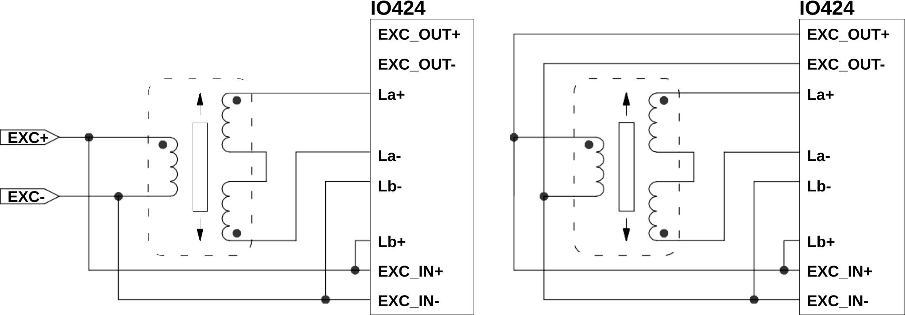
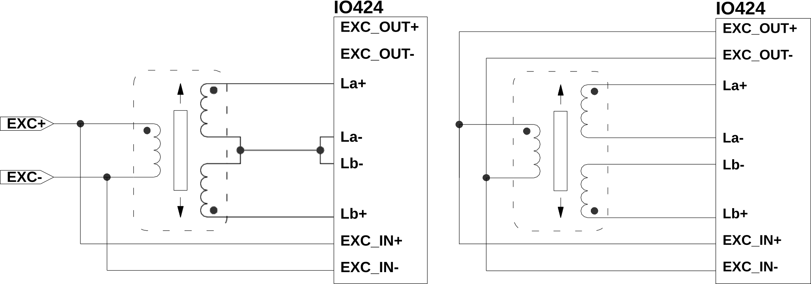

IO424 Usage Notes — Usage information about the I/O module
QUAD: Quadrant-Detection Error. While at '1', Angle/Stroke and Velocity are not valid.
180 deg jump
Excessive rotation speed
Excessive offsets
Excessive phase shifts (> 45 deg)
LOS: SIN/COS Loss-of-Signal. While at '1', Angle/Stroke and Velocity are valid, but may be degraded.
Sum of SIN and COS signal is below 1/16 of the selected input range
CLIP SIN: SIN Clipping. While at '1', Angle/Stroke and Velocity are not valid.
Clipping is position dependent
CLIP COS: COS Clipping. While at '1', Angle/Stroke and Velocity are not valid.
Clipping is position dependent
EXC LOW: Excitation Frequency too low.
f_Exc < 400 Hz in Synchro, f_Exc < 1 kHz for the others. If set while "Excitation Frequency too high" is also set, the frequency is within limits but not stable.
EXC HIGH: Excitation Frequency too high.
f_Exc < 20 kHz. If set while "Excitation Frequency too low" is also set, the frequency is within limits but not stable.
AMP OT: Excitation Output Overtemperature Flag.
It signals an overtemperature in the excitation amplifier. When set, it disables the excitation output. Restart the application if this status bit is raised.
This section describes the different connection methods for the IO424.
Resolver, with external or internal reference.
LVDT/RVDT Differential configuration, with external or internal reference.

LVDT/RVDT Ratiometric configuration, with external or internal reference.

Synchro configuration, works only with external reference.